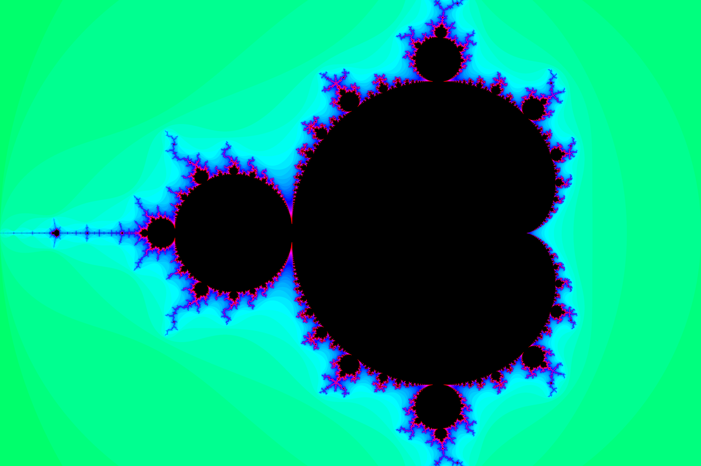
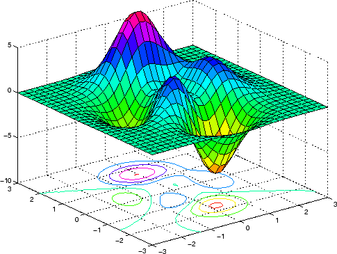

Featured Projects
These projects represent my interests in computational mathematics, research, visualization, programming, and advanced problem solving.

A Geometric Exploration of Generalized Mandelbrot Sets
Polygence • 2024–2026
Objective
The goal of this project was to investigate the geometric properties of generalized Mandelbrot sets and explore how polynomial degree affects symmetry, structure, and area. Through computational modeling and mathematical analysis, I explored how complex dynamics generate fractal structures and how these structures change across polynomial families.
My Responsibilities
- Developed computational simulations for generalized Mandelbrot sets using Python.
- Generated fractal visualizations using NumPy and Matplotlib.
- Investigated rotational and reflectional symmetries.
- Derived mathematical conjectures and constructed proofs.
- Wrote and revised research papers and presentations.
What I Learned
This project taught me how computational methods and mathematical proofs complement one another. I strengthened my skills in programming, visualization, proof writing, and research communication. Additionally, the project provided firsthand exposure to the research and publication process through journal publication and participation in science fair competitions.
Skills Demonstrated

Curvature in Control: Exploring the Tait–Kneser Theorem
Euler Circle Differential Geometry Program • Summer 2025
Objective
The goal of this project was to study how curvature influences geometry through the Tait–Kneser theorem and investigate how osculating circles describe the behavior of smooth curves.
My Responsibilities
- Studied curvature and osculating circles in differential geometry.
- Constructed visualizations demonstrating geometric behavior.
- Solved proof-based problem sets.
- Wrote an expository paper explaining the theorem.
- Investigated computational applications.
What I Learned
This project strengthened my understanding of proof-based mathematics and showed how abstract geometry connects to applications in computer graphics, motion planning, and curve modeling.